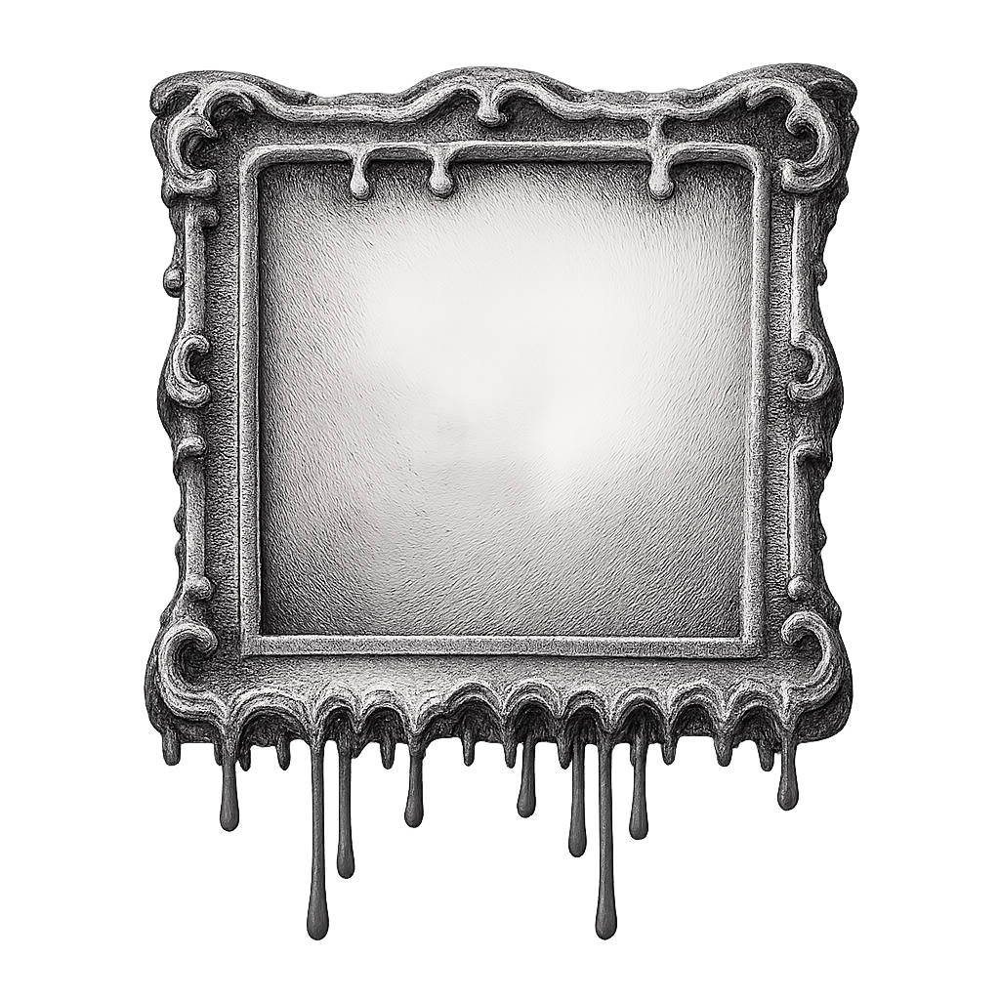

2021-10-14
Грач на задании
— Опростоволосился, — думал грач, — попал между молотом и наковальней, выдохся, выцвел, заплесневел. История не терпит парадоксов!…
2021-09-08
Дуэль
Швейцария, 1887 год. Есаул Владилен Федорович де-Сент Шаломонов, прикомандированный к артиллерийскому полку четвертого военного…
2021-04-19
Там, в Норвегии...
Когда автоматический кальцинатор заклинил я обернулся и узрел как сгустки плазмы, чуть затянутые полупрозрачной ситцевой гистограммой,…
2021-03-17
Не вы ли граф?
Ко мне подошла женщина. — Не вы ли граф? Я опустил голову и посмотрел на туфли. — Не я. У нее не было слов, но она спросила: — Как же…
2021-02-14
Камердинер
Я плакал, когда разверзлись небеса и свежий ливень окропил площадь у древнего обелиска. Обожаю стоять под прохладным летним дождем. А…
2021-01-16
Там, где море молчит
«Ты ослушался меня, Патрик. Куда тебя, лихим порывом ветра, затянуло? В какой же шторм ты, по призыву пылких чувств, что жизнь нас в…
2020-12-11
Ярл Варг
В древние времена сказывали об одном человеке, который не мог ужиться со своей истинной природой. Он был одержим формой, в которую был…
2020-10-13
Низложение ленивого Лукаша или ловля Лаврентия
Однажды мы с Колей разбирали старый шкаф в подвале на Пушкинской. Среди кипы бумаг и старых газет мне на глаза попалась старая…
2020-10-01
Dialogs
Dave Bowman : Hello, HAL. Do you read me, HAL? HAL : Affirmative, Dave. I read you. Dave Bowman : Open the pod bay doors, HAL. HAL :…
2020-07-10
Телевизор
Я бросил бутылку в телевизор, который уже много лет показывал только черно-белый шум и лишь иногда, глубокой ночью, в нем появлялись…